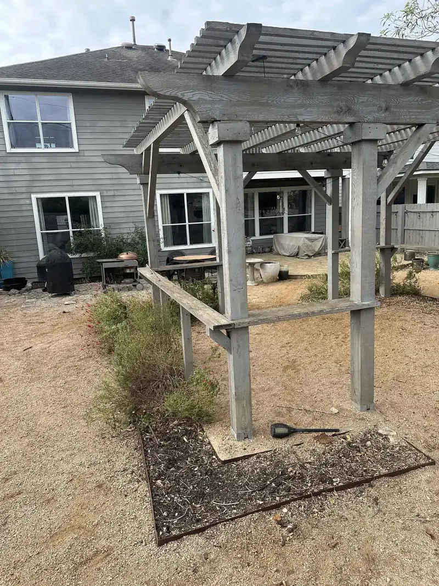
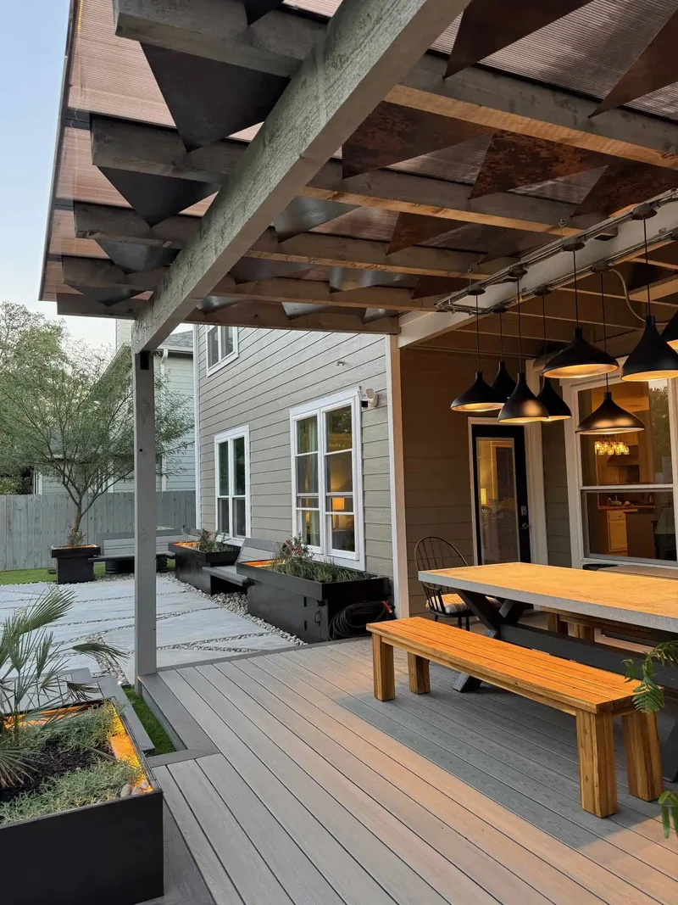
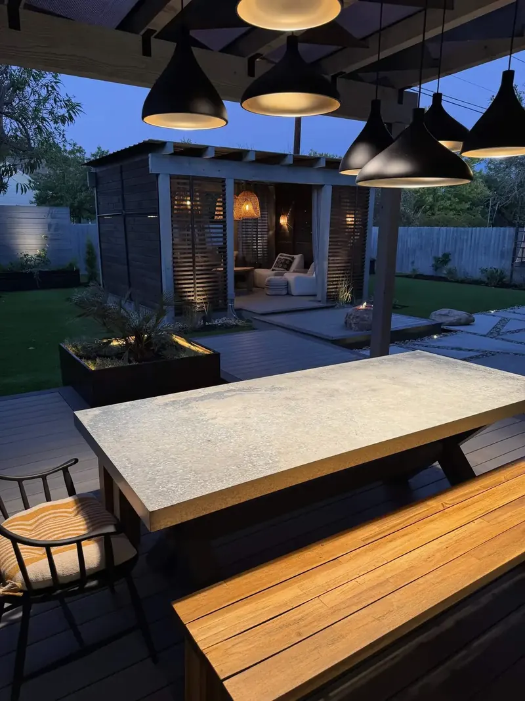
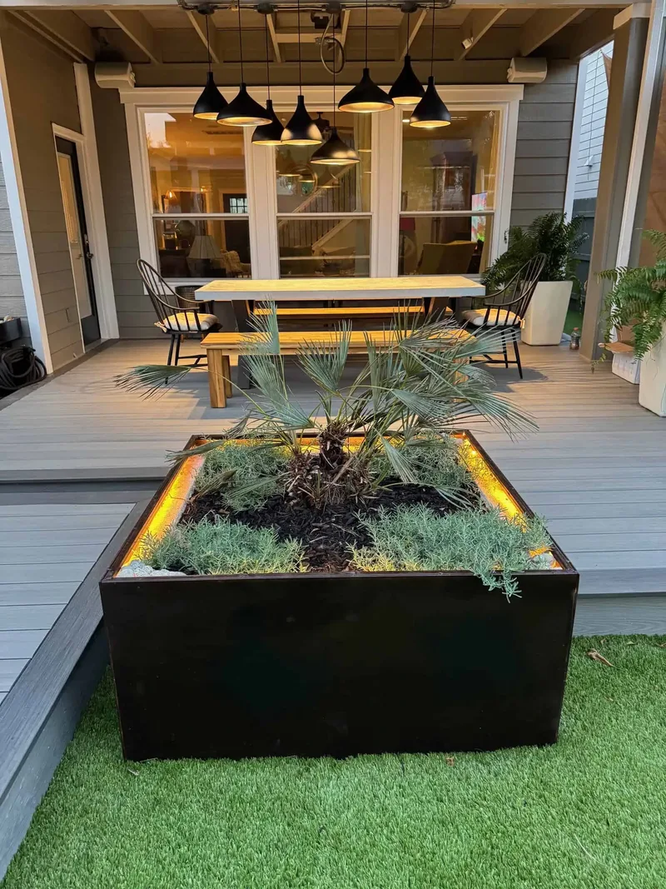
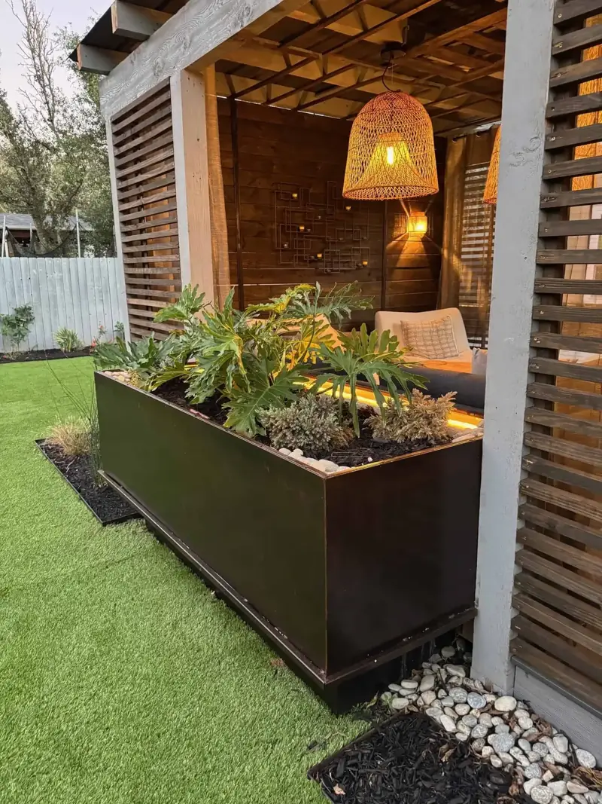

Red Agave Landscape rebuilt a sun-bleached wood pergola in Circle C, Austin by keeping the structure, reframing it, and capping it with custom-cut steel triangles. The pergola was failing, and so was the flagstone patio under it. We kept both. Composite decking went over the flagstone in one plane, pendant lights went under the beams, and the pergola became the dining room of a new backyard. Our own crew built it in 2024.


What Was in the Yard Before?
A yard at the end of its life. Three things had worn out together:
- The pergola: wood, bleached gray by the sun, and failing
- The patio: flagstone, and failing
- The lawn: dirt where the grass had given up
Tearing all of it out was the obvious route. We did not lift a single stone. The new yard was built directly over the old one.
Why Rebuild a Pergola You Could Tear Down?
Because it already stands where the shade is wanted. A rebuild keeps the footprint that is there, so the design work goes into the frame and the top.
In Circle C there is a second reason. The neighborhood sits over the Edwards Aquifer, and every lot there has a cap on impervious cover. Austin’s Save Our Springs ordinance limits impervious cover over the aquifer to 15 percent of net site area in the recharge zone and 20 to 25 percent in the contributing zone, and it allows no variances. Those percentages are not each lot’s limit: the City’s code says its watershed requirements "apply to the subdivision as a whole." The cap on a single lot is set lot by lot, and every new slab counts toward it. Our impervious cover guide quotes the City’s text.
So the question in Circle C is how to add a room without adding ground cover. The answer is to build over surfaces that already exist. Here that meant the pergola that was standing and the patio that was already on the ground. Our Circle C page covers the limits.
What Does the Steel Cap Do?
It makes the shade. The triangles are cut from steel and set above the rafters, pointing in alternating directions. Through the afternoon they throw geometric shadows across the deck, and from below they read as a pattern against the sky.
The wood frame stays in view under them: gray beams and posts below, and dark steel above.


Steel is the material we build new pergolas from too. Our post on choosing a pergola builder shows a steel pergola built from scratch in Cedar Park, and our custom pergolas page covers every style we build.
How Is the Pergola Lit?
From under the beams. A group of black dome pendants hangs over the dining table at staggered heights. Each shade opens downward, so the light falls on the table and the deck, and nothing shines up past the pergola.
The planters carry the rest. Each steel planter has a light strip under its rim, so the plants are lit from inside the rim and no bulb shows. Our post on landscape lighting installation covers how the pendants and planter lights went in.
What Went Under the Pergola?
A deck, laid over the old patio. Dekorators Sea Salt composite decking covers the flagstone in one continuous plane, so the dining table under the pergola stands on a level floor.
Two wide deck steps drop from there into the yard. The lower one is a platform with a boulder fire pit set into it, in front of a slatted cabana.
Composite needs no sealing and no staining. See our custom decks page.
What Did the Plan Call For?
The plan sets out a main deck off the house, two deck steps, a square deck with a fire pit at its center, and concrete pavers cut on the diagonal. It gives the paver fields as 13 feet 6 inches, 10 feet 2 inches, and 13 feet 4 inches.

The photos below show the same parts as our crew built them. More of our drawings are on the design plans page.



What Did We Build?
- Pergola: the existing wood pergola, kept and reframed
- Top: custom-cut steel triangles
- Lighting: black dome pendants under the beams, and steel planters lit under the rim
- Deck: Dekorators Sea Salt composite, in one plane over the old flagstone
- Steps: two deck steps, the lower one with a boulder fire pit
- Planters: cantilevered steel planters with built-in lighting
- Paving: concrete pavers cut on the diagonal, with river rock in the joints
- Lawn: artificial turf
- Built: 2024, by our own crew
See the full Circle C project. For materials and cost ranges, see our Austin pergola guide. Every Red Agave project starts with a free consultation, and the CAD plan is included.
Questions We Hear
Can an old wood pergola be rebuilt with steel?
Yes. In Circle C we kept a sun-bleached wood pergola, reframed it, and capped it with custom-cut steel triangles.
Why rebuild a pergola instead of tearing it down?
A rebuild keeps the footprint that is already there. In Circle C that matters, because every lot there has a cap on impervious cover.
What do the steel triangles on the pergola do?
They make the shade. Through the afternoon they throw geometric shadows across the deck, and from below they read as a pattern against the sky.
Can a deck be laid over an old flagstone patio?
Yes. In Circle C we laid Dekorators Sea Salt composite decking over the old flagstone patio in one continuous plane.
What is the impervious cover limit in Circle C?
It is set lot by lot. Austin’s Save Our Springs ordinance limits impervious cover over the Edwards Aquifer to 15 percent of net site area in the recharge zone, 20 percent in the Barton Creek part of the contributing zone, and 25 percent in the rest of the contributing zone, and it allows no variances. The City’s code says its watershed requirements "apply to the subdivision as a whole." The cap on a single lot comes from the City’s code and the section’s plat. In the GreyRock Ridge sections, the Declaration’s amendments set it at 45 percent of the lot.